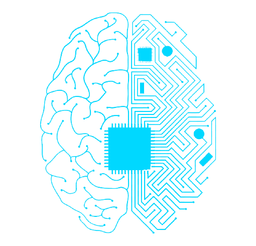

Looking toward the future
Join us in our exploration of ethics, by contributing your views on how artificially intelligent machines, such as autonomous vehicles and health information technology, should act when faced with a moral dilemma.

Join us in our exploration of ethics, by contributing your views on how artificially intelligent machines, such as autonomous vehicles and health information technology, should act when faced with a moral dilemma.